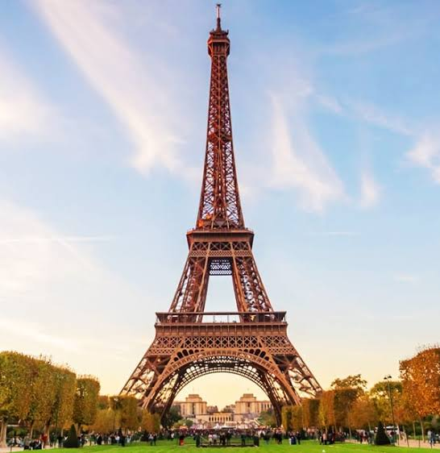
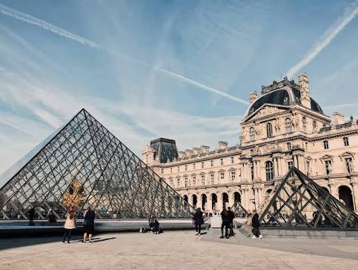
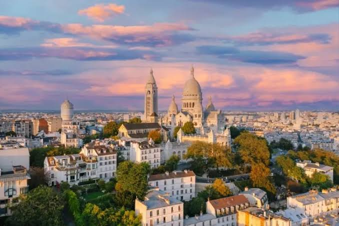

França
A França reúne arte, culinária e charme em cada esquina. Entre cafés aconchegantes, museus famosos e ruas cheias de história, o país é ideal para quem busca um destino elegante e acolhedor. Paris é o melhor ponto de partida para conhecer esse universo. Confira abaixo três lugares para colocar no seu roteiro.
Torre Eiffel

Símbolo de Paris, a Torre Eiffel foi construída para a Exposição Universal de 1889. Dá para subir e ver a cidade inteira lá de cima. À noite, ela brilha em intervalos, e esse é um dos momentos mais bonitos da viagem.
Museu do Louvre

Um dos maiores museus do mundo, o Louvre guarda obras famosas como a Mona Lisa. A entrada pela pirâmide de vidro já é um passeio à parte. Como não dá para ver tudo em um dia, escolha antes o que mais quer conhecer.
Montmartre e Sacré-Cœur

Cheio de ladeiras, ateliês de artistas e cafés, Montmartre é um bairro de clima aconchegante. No alto fica a basílica de Sacré-Cœur, com uma das melhores vistas de Paris. É um passeio ótimo para fazer sem pressa.
Dica geral
O metrô é a forma mais prática e barata de se locomover por Paris.